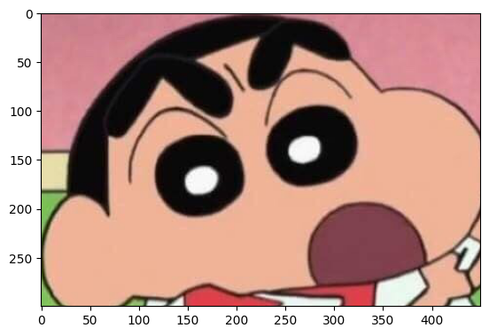

from PIL import Image전통적인 이미지 처리 방법
딥러닝을 사용한 이미지 학습 기법 전에, 여러 수많은 이미지 처리 기법들이 발전되어 왔습니다. 이들은 현재는 딥러닝 모델 학습을 위한 데이터 가공에 사용되고 있습니다.
전통적인 이미지 처리 기법에는 대표적으로 다음과 같이 3가지가 존재합니다. - 형태변환
색상변환필터 변환
본 글에서는 위의 세가지 전통적인 이미지 처리 방법에 대해서 알아보고, 직접 실습해보도록 하겠습니다.
PIL (Pillow) 란?
PIL(Python Imaging Library)은 파이썬에서 openCV와 함께 자주 사용되는 이미지 처리 라이브러리입니다. 기존 PIL 라이브러리 개발은 중단되었지만, 오픈소스를 복제한 Pillow 라는 이름으로 현재까지 개발되고 있습니다.
설치
pip install Pillow
라이브러리 import
1. 이미지 확인하기
이미지 불러오기
img = Image.open("pil_test.jfif")img 변수에는 PIL의 Image 클래스 객체가 저장됩니다. from PIL import Image에서 불러온 Image와, PIL의 Image 클래스는 다른 존재입니다. 지금부터 사용하는 메서드는 모두 PIL의 Image 클래스에 구현된 함수임에 유의하도록 합니다.
이미지 시각화
import matplotlib.pyplot as plt
plt.imshow(img)<matplotlib.image.AxesImage at 0x7f78cc261dc0>
이미지 시각화에는 matplotlib의 imshow 메서드를 사용합니다. 이미지는 근육을 자랑하는 짱구로 준비해보았습니다.
이미지 정보 확인
print(f"Size: {img.size}, Mode: {img.mode}")Size: (583, 587), Mode: RGB이미지의 사이즈는 Image 객체안의 size 속성에, 컬러는 mode 속성에 저장되어있습니다. 이 짱구 사진의 크기는 가로 583, 세로 587 픽셀로 이루어져 있고, 각 픽셀은 RGB 채널을 가지고 있음을 확인하였습니다.
2. 형태 변환
형태 변환은 말그대로 이미지의 형태를 변환하는 것입니다. 그 예시로, 잘라내기 (crop), 회전 (rotate), 크기 변경 (resize) 이 있습니다.
2.1 이미지 잘라내기 (crop)
잘라내기 (crop)은 전체 이미지 중 특정 부분만 잘라내는 작업입니다. crop 메서드를 통해 구현할 수 있으며, 이미지 좌표계에 따라, 4개 좌표를 튜플 형태로 입력하면 됩니다.
따라서 이미지의 좌표계에 대하여 이해하고 있어야 합니다. 해당 이미지 좌표계는 원점 (0, 0)이 좌측 최상단에 존재합니다. 그렇기 때문에 x축은 원점을 기준으로 오른쪽으로, y축은 원점을 기준으로 아래쪽으로 값이 커진다고 생각하면 됩니다.
crop 메서드에 들어갈 튜플은 (x1, y1, x2, y2) 의 형태로 들어가게되는데, 크롭 할 네모박스 기준으로 좌측 상단 좌표 (x1, y1), 우측 하단 좌표 (x2, y2)를 의미합니다.
plt.imshow(img.crop((10, 50, 460, 350)))<matplotlib.image.AxesImage at 0x7f78b4f110d0>
짱구의 얼굴만 잘라낸 결과입니다.
2.2 이미지 회전 (rotate)
이미지 회전은 이미지를 시계방향이나 반시계 방향으로 일정 각도만큼 돌리는 것입니다. rotate 메서드에 회전하고자 하는 각도를 넣으면, 해당 각도만큼 반시계 방향으로 회전한 결과가 나오게됩니다.
plt.imshow(img.rotate(30))<matplotlib.image.AxesImage at 0x7f78b4ebb130>plt.imshow(img.rotate(60, expand=True))<matplotlib.image.AxesImage at 0x7f78b52d7d00>이미지가 잘리는 것을 막기 위해 expand=True를 사용할 수 있습니다.
plt.imshow(img.rotate(270))<matplotlib.image.AxesImage at 0x7f78b51aecd0>시계방향으로 돌리고 싶다면, 돌리고싶은 각도만큼 360에서 수를 빼주면 됩니다.
2.3 이미지 크기 및 비율 변환
이미지의 가로, 세로 길이를 변화시키는 작업입니다. resize 메서드에 바꾸고자 하는 가로, 세로 픽셀 길이를 튜플로 넣어주면 됩니다.
img_resized = img.resize((150, 300))
plt.imshow(img_resized)<matplotlib.image.AxesImage at 0x7f78b49ac0a0>2.4 전단 변환 (Shearing)
원래는 사각형의 형태였던 이미지를 평행사변형 꼴로 만드는 변환입니다. 여기에는 transform 메서드를 사용합니다.
Image.transform(size, method, data=None, resample=Resampling.NEAREST, fill=1, fillcolor=None)size: 출력될 이미지의 크기
method: 변환의 종류를 지정 (전단 변환에는 아핀변환[Affine Transform]을 사용해야 하므로 Image.AFFINE을 지정합니다)
data: 적절한 값을 넣어주어야 함. (선형대수학이 필요함)
plt.imshow(img.transform((int(img.size[0] * 1.5), img.size[1]), Image.AFFINE, (1, -0.5, 0, 0, 1, 0)))<matplotlib.image.AxesImage at 0x7f78b49d4fa0>plt.imshow(img.transform((int(img.size[0] * 1.2), img.size[1]), Image.AFFINE, (1, -0.2, 0, 0, 1, 0)))<matplotlib.image.AxesImage at 0x7f78b4b317f0>두 가지 방법의 차이점은 첫번째 파라미터 (size) 의 첫번째 값에 곱해주는 값과 세번째 파라미터 (data)의 첫번째 값 입니다. size에서 곱해주는 값은출력 크기를 맞춰주는 장치일 뿐이고, data파라미터의 두번째 값이 전단 변환의 정도, 즉 평행사변형의 기울기를 의미합니다.
3. 색상 변환
색상 변환에는 대표적으로 밝기(Brightness) 변화, 대조(Contrast)변화, 흑백 (Grayscale)변화 등이 있습니다. 여기에는 Pillow의 ImageEnhance라는 모듈을 사용합니다.
from PIL import ImageEnhance 3.1 밝기 변화
bright_enhancer = ImageEnhance.Brightness(img)먼저, ImageEnhance모듈의 Brightness 클래스를 불러옵니다. 그러면 img 객체에 밝기 조절을 할 수 있는 Enhancer 객체가 만들어집니다. 이 객체에 enhance라는이름의 메서드를 사용합니다. 얼마나 밝기 조절을 할지, 배수를 넣어주면 됩니다.
plt.imshow(bright_enhancer.enhance(2))<matplotlib.image.AxesImage at 0x7f78b503aac0>밝기를 2배 올려준 이미지가 나온 것을 확인할 수 있습니다.
plt.imshow(bright_enhancer.enhance(0.5))<matplotlib.image.AxesImage at 0x7f78b4a92b50>이번엔 0.5배로 밝게, 즉, 두배 어둡게 만들어 준 예제입니다.
3.2 대조 변화
대조 변화는 ImageEnhance 모듈에서 Contrast 클래스를 사용하며, 사용법은 밝기 변화와 동일합니다.
contrast_enhancer = ImageEnhance.Contrast(img)
plt.imshow(contrast_enhancer.enhance(2))<matplotlib.image.AxesImage at 0x7f78b4a8c9d0>대조를 2배 강하게 만들었습니다.
plt.imshow(contrast_enhancer.enhance(0.5))<matplotlib.image.AxesImage at 0x7f78b48a5490>대조를 2배 약하게 만들었습니다.
3.3 흑백 변화
이미지 컬러 여부를 mode 속성에 RGB 임이 저장되어있었는데, 이 mode를 흑백으로 변경해주는 작업입니다.
공식문서 에서 모드들을 확인할 수 있습니다.
img_gray = img.convert("L")
print("흑백사진 모드: ", img_gray.mode)
plt.imshow(img_gray, cmap=plt.get_cmap("gray"))흑백사진 모드: L<matplotlib.image.AxesImage at 0x7f78b4520fd0>
4. 필터 변환
필터는 포토샵이나 스마트폰에서 사진 보정을 위해 적용하는 필터와 비슷하다고 생각하면 됩니다. 대표적으로 샤프닝(Sharpening), 블러 (Blur), 경계선 탐지 (Edge Detection) 이 있습니다. filter 메서드에서 적용할 필터 종류를 파라미터로 넣어주어야 합니다. 이는 ImageFilter라는 별도 모듈에 구현되어 있습니다.
공식문서 에서 필터의 종류를 확인할 수 있습니다.
4.1 샤프닝 (Sharpening)
이미지의 질갑을 날카롭게 만들어주는 작업입니다. 원본 사진이 흐릿할 경우 어느 정도의 화질 개선의 효과를 얻을 수 있지만, 과하게 적용하면 이미지의 자글자글한 노이즈가 부각될 수 있습니다.
Pillow의 ImageFilter 모듈의 SHARPEN 을 동태 샤프닝을 수행할 수 있습니다.
from PIL import ImageFilter
plt.imshow(img.filter(ImageFilter.SHARPEN))<matplotlib.image.AxesImage at 0x7f78b44836a0>샤프닝 전과 큰 차이가 없어보이므로 이럴 때는 여러 번 사용해볼 수도 있습니다.
img_sharpen = img.filter(ImageFilter.SHARPEN)
img_sharpen = img_sharpen.filter(ImageFilter.SHARPEN)
img_sharpen = img_sharpen.filter(ImageFilter.SHARPEN)
plt.imshow(img_sharpen)<matplotlib.image.AxesImage at 0x7f78b4a3feb0>4.2 블러 (Blur)
샤프닝과 반대의 개념으로, 이미지를 흐릿하게 만들어주는 작업입니다. 예시로, 배경에 블러 처리를 하여 사진에 찍힌 대상물을 부각시키는 작업에서 흔히 사용합니다. 스마트폰 카메라의 인물모드로, 배경에 자동으로 블러를 입혀주는 기능과 같습니다.
블러는 ImageFilter의 BLUR를 사용하면 됩니다. 사용법은 샤프닝과 동일하게 진행하면 됩니다.
img_blur = img.filter(ImageFilter.BLUR)
img_blur = img_blur.filter(ImageFilter.BLUR)
img_blur = img_blur.filter(ImageFilter.BLUR)
plt.imshow(img_blur)<matplotlib.image.AxesImage at 0x7f78b4afad60>5.3 경계선 감지
경계선 감지는 이미지의 경계선을 찾아주는 작업입니다. 경계선은 이미지 내에서 색의 변화가 급격한 선 이라고 해석할 수 있습니다.
ImageFilter의 FIND_EDGES를 통해 경계선을 찾아내도록 합니다.
plt.imshow(img.filter(ImageFilter.FIND_EDGES))<matplotlib.image.AxesImage at 0x7f78b43c3eb0>검정 선으로 그려진 캐릭터라 그런지 경계선이 더 잘 감지되는 것을 확인할 수 있습니다.
본 글은 Elice 이미지 처리 - [이론] PIL 알아보기 강의를 참고하여 정리한 글입니다.